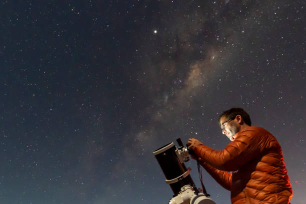
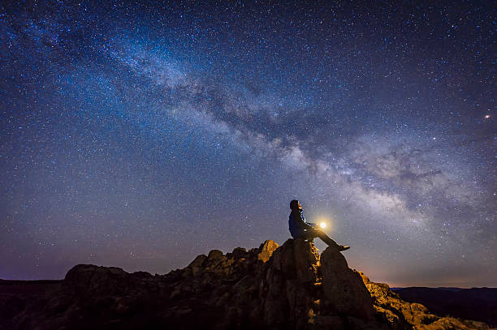

Astroturismo Centauri


|  |
Charlas guiadasLa experiencia comienza con una charla introductoria, la cual será el inicio para comenzar a ver el cielo como nunca antes. |

|
ObservaciónObserva con tus propios ojos los hermosos cráteres de la luna, las manchas de nuestro planeta hermano júpiter, los hermosos anillos de saturno, o incluso cuerpos celestes más exóticos, como nebulosas y cúmulos globulares; todo ello gracias a nuestros telescopios profesionales. |
|  |
FotografíaCulmina esta increíble experiencia con una fotografía junto al hermoso cielo nocturno, ya sea con nuestro centro galáctica o con las preciosas “nubes de magallanes” dos galaxias vecinas. |